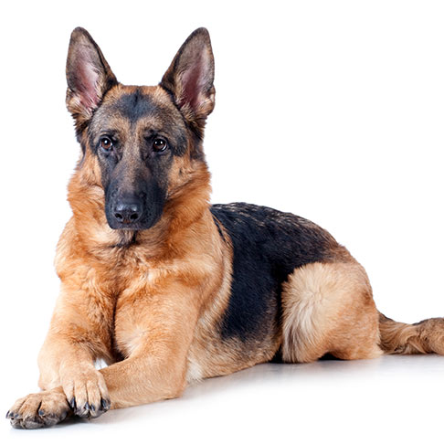

German Shepard
| Weight: |
30-35 kg |
| Color: |
Dark brown |
| Coat: |
Short-haired |
The German Shepherd[a] or Alsatian is a German breed of working dog of
medium to large size. The breed was developed by Max von Stephanitz
using various traditional German herding dogs from 1899. It was
originally bred as a herding dog, for herding sheep. It has since been
used in many other types of work, including disability assistance,
search-and-rescue, police work and warfare. It is commonly kept as a
companion dog, and according to the Fédération Cynologique
Internationale had the second-highest number of annual registrations
in 2013.